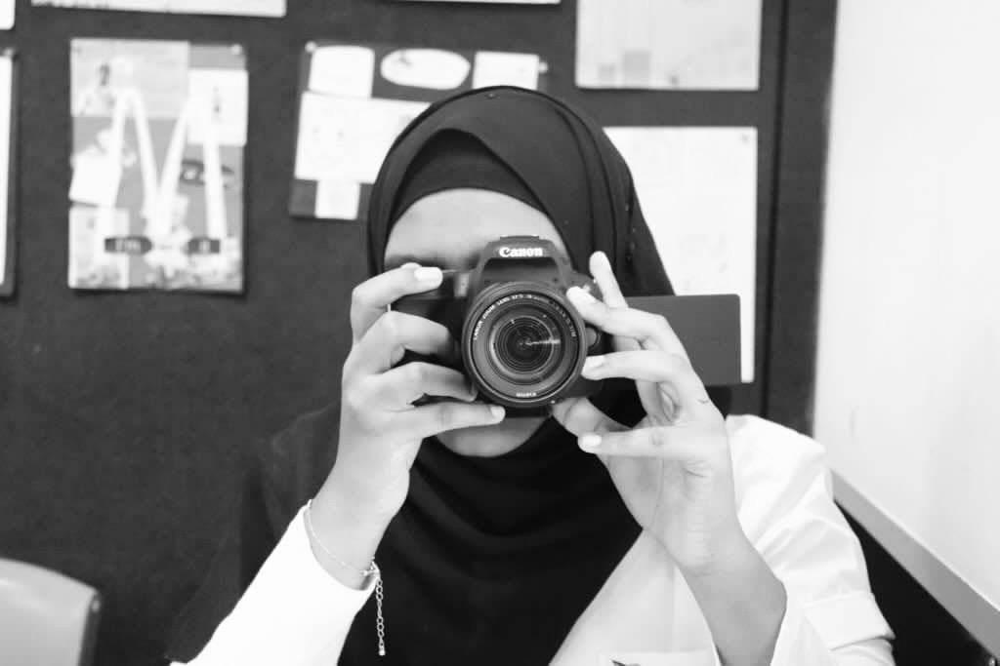

Hello, I'm
Simeen Sohel
Year 12 student


Hello, I'm
Year 12 student
Get to kow more
1+ years
Year 12 Student

Till Year 10, St Anns' Girls High School, India
Year12, Kellyville High School, Australia
I’m a Year 12 student passionate about engineering and IT, with early programming experiences through Scratch and Python, a notable project with the Anveshana competition, and active roles in school clubs and volunteering. My commitment to these fields is reflected in my leadership in environmental initiatives and dedication to community service, balancing academic excellence with hands-on experience and a desire to make a positive impact.
Browse My Recent
As a volunteer at the Park Run event, held every Saturday at 8:00 AM, I volunteered to help ensure the safety and enjoyment of all participants. Serving primarily as a tail walker, I was responsible for walking at the end of the run, assisting those who finished last, and providing encouragement and support to community members throughout the course. Following the event, I aided in the cleanup process by picking up cones, checking for any stragglers by collectively working with other volunteers.
As an active member of the school's Environmental Club. My responsibilities include planning and delivering weekly announcements on promoting environmental awareness and protection at assemblies, organising environment-themed days, and creating educational posters for the student body. I also help propose and implement initiatives aimed at reducing paper usage and advocating for recycled materials. Additionally, I help manage the school compost and participate in gardening activities.
As a volunteer at the Middle Dural Toy Library, I assisted children and their parents in selecting toys, ensuring the safety and engagement of young children. My responsibilities included organising and arranging both new and returned toys, scanning them, and updating their status on the library's website. Additionally, I managed the website to maintain accurate toy inventory records, implemented a numbering system to streamline borrowing, and easy access for members to locate and borrow toys.
Get in Touch